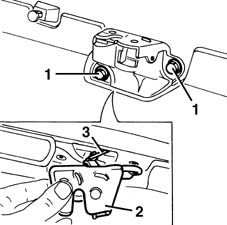
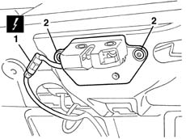
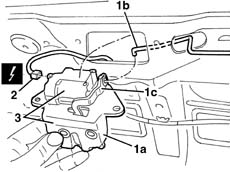
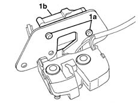
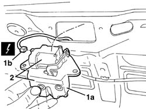

7015B10 SINGLE TAILGATE LOCK - R+R OR REPAIR WITH PANEL/PROTECTION REMOVED
- Path
- Procedures > 70 FITTINGS > 7015 TAILGATE/FLAP > 7015B TAILGATE LOCKING/OPENING DEVICES > 7015B10 SINGLE TAILGATE LOCK - R+R OR REPAIR WITH PANEL/PROTECTION REMOVED
- Kind
- repair procedure (removal / refitting; the operation number is the code)
- Applies to
- all engines; all production periods
- Interactive page
- https://sloeber94.github.io/elrnDB-fMltpl/en/#/2892119
Applies to: all engines; production: fino a 05/99, da 06/99 a 03/02
 Removing
Removing
 Refitting
Refitting1. Open the tailgate and undo the bolts.
2. Move the lock over slightly.
3. Disconnect the linkage and recover the lock.

Applies to: all engines; production: fino a 05/99, da 06/99 a 03/02
Refitting
RemovingCheck that the catch is undamaged.
Connect the linkage to the lock.
Fit the lock and tighten the bolts.
Test that the lock works properly and is correctly aligned with the striker.
Applies to: all engines; production: da 09/03, da 04/02 a 08/03, fino a 05/04
Removing
Refitting1. Disconnect the electrical connection.
 | Name | Connector |
|---|---|---|
1 | Boot opening switch |
2. Undo the bolts.

Applies to: all engines; production: da 09/03, da 04/02 a 08/03, fino a 05/04
1. Move the lock (1a) slightly and disconnect the lock lever (1c) rod (1b).
2. Disconnect the electrical connection.
| Name | Connector |
|---|---|---|
2 | Boot lock gearmotor |
3. Keep the lock and actuator.

Applies to: all engines; production: da 09/03, da 04/02 a 08/03, fino a 05/04
1. If necessary, undo the bolts (1a) and remove the actuator (1b).

Applies to: all engines; production: da 09/03, da 04/02 a 08/03, fino a 05/04
Refitting
RemovingCheck that the catch is undamaged.
If removed, place the actuator in position and secure it using the bolts.
Connect the actuator electrical connection.
Connect the rod to the lock lever.
Position the lock and tighten the bolts.
Connect the electrical connection.
Test that the lock works properly and is correctly aligned with the striker.
Applies to: all engines; production: da 06/04
Removing
Refitting1. Disconnect the electrical connection.
Description | Connector | |
|---|---|---|
1 | Boot release switch |
2. Undo the bolts.
Applies to: all engines; production: da 06/04
1. Move the lock (1a) slightly and disconnect the electrical connection (1b).
Description | Connector | |
|---|---|---|
1b | Boot lock geared motor |
2. Keep the lock and actuator.

Applies to: all engines; production: da 06/04
1. If necessary, undo the bolts (1a) and remove actuator (1b).
Applies to: all engines; production: da 06/04
Refitting
RemovingCheck that the lock is not damaged.
If removed, place the actuator in position and secure it using the bolts.
Connect the electrical connection for the actuator.
Connect the rod to the lock lever.
Position the lock and tighten the bolts.
Connect the electrical connection.
Check that the lock is working and that it is correctly matched with the striker.